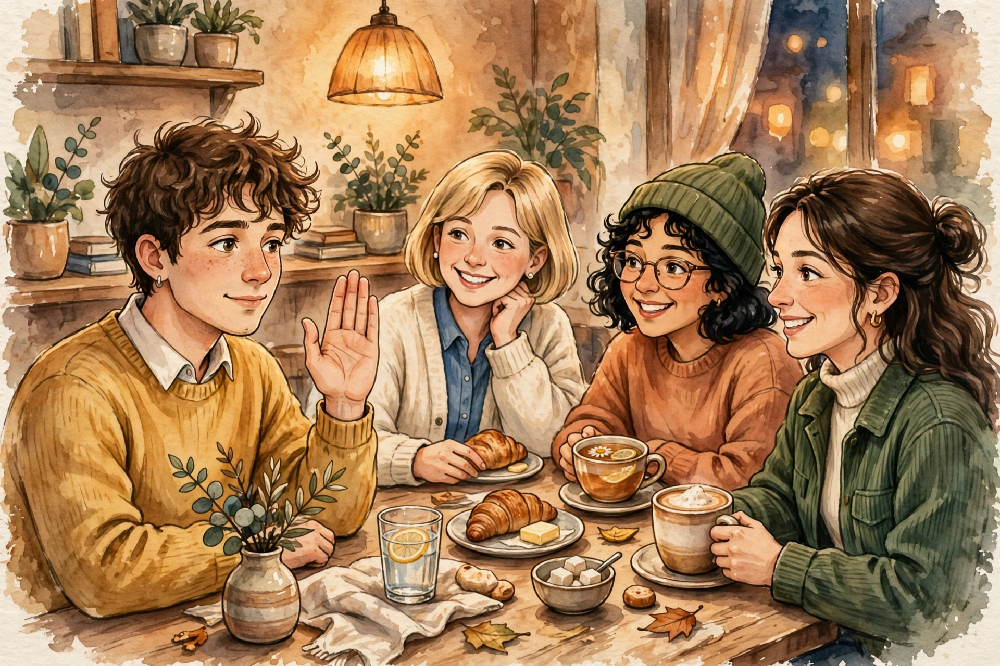
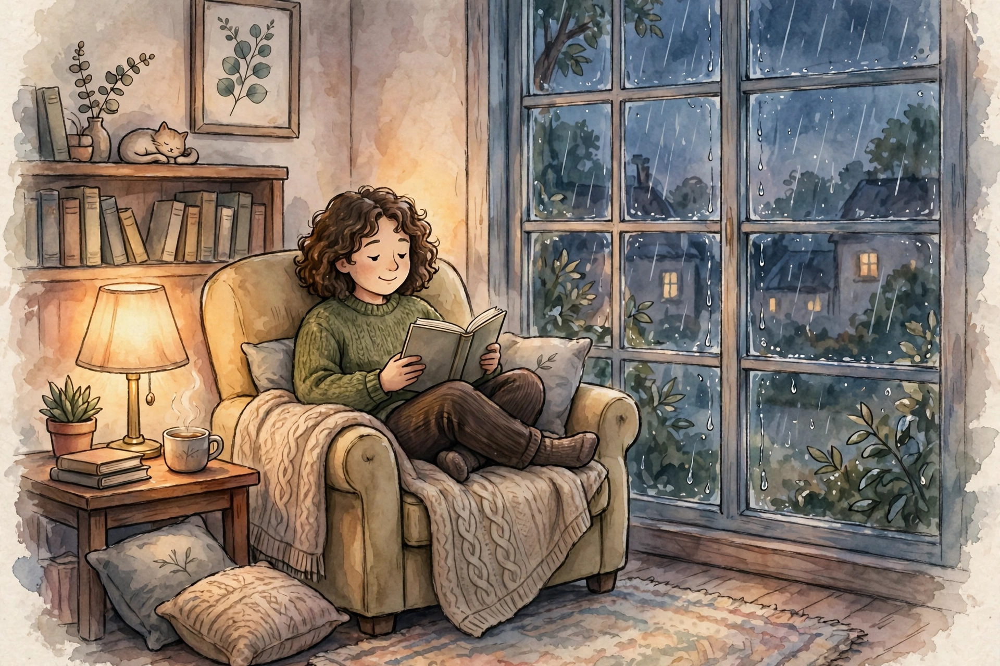

29 September 2026
Seni Bilang Tidak
Setiap "ya" yang kamu ucapkan sambil menggerutu diam-diam adalah "tidak" untuk sesuatu yang sebenarnya lebih penting. Playbook ini bukan buat bikin kamu jadi orang dingin — tapi biar "ya"-mu kembali punya arti.

Kenapa bilang "tidak" terasa bersalah
Sebagian besar dari kita dibesarkan dengan pelajaran tak tertulis: orang baik itu selalu membantu, selalu tersedia, selalu mengiyakan. Maka menolak terasa seperti melanggar kontrak sosial — seolah bilang "tidak" sama dengan bilang "aku orang jahat".
Padahal ada bedanya yang jarang disadari: kebaikan itu sukarela, people-pleasing itu didorong rasa takut — takut ditolak, takut dicap egois, takut hubungan retak. Kalau kamu menolong karena takut, itu bukan kebaikan. Itu negosiasi diam-diam demi diterima.
Dan kabar buruknya: pola ini bikin kamu kelelahan, menumpuk dendam kecil ke orang yang kamu "tolong", lalu diam-diam menyalahkan mereka — padahal yang bilang "ya" adalah kamu sendiri.
Paradoksnya: "ya" untuk semua = "tidak" untuk prioritasmu
Waktumu terbatas. Setiap permintaan yang kamu iyakan otomatis menolak sesuatu yang lain: istirahatmu, pekerjaan utamamu, waktu untuk keluargamu, atau sekadar malam tenang tanpa beban pikiran.
"Perbedaan orang sukses dan orang yang sangat sukses adalah: orang yang sangat sukses menolak hampir semua hal." — Warren Buffett
Jadi sebelum merasa bersalah menolak, tanya dulu: kalau aku bilang "ya" untuk ini, apa yang sedang aku bilang "tidak" untuknya? Seringnya jawabannya bikin kamu sadar bahwa penolakanmu justru bentuk tanggung jawab.
Template menolak yang sopan tapi tegas
Orang yang sulit menolak biasanya bukan kekurangan niat — kekurangan kalimat. Berikut kalimat siap pakai untuk empat situasi paling sering:
Ke atasan
Jangan menolak mentah-mentah; tunjukkan peta kerjamu dan biarkan ia yang memilih:
"Saya mau bantu, Pak/Bu. Tapi minggu ini saya lagi pegang A dan B, dua-duanya deadline Jumat. Kalau saya ambil ini, salah satu pasti molor. Mana yang mau Bapak/Ibu saya tunda dulu?"
Kamu tidak menolak kerja — kamu menolak ilusi bahwa semuanya bisa dikerjakan sekaligus.
Ke teman
Singkat, hangat, tanpa esai pembelaan:
"Gue nggak bisa kali ini, bro. Tapi coba tanya Dimas deh, dia kemarin lagi nyari-nyari kegiatan kayak gini."
Menolak sambil menunjuk jalan keluar terasa jauh lebih ringan — buat kamu dan buat dia.
Ke keluarga
Keluarga paling gampang bikin bersalah, jadi tawarkan waktu lain:
"Aku pengen bantu, tapi weekend ini aku udah janji istirahat total. Gimana kalau minggu depan? Aku datang lebih pagi sekalian."
"Tidak sekarang" bukan "tidak selamanya". Bedanya besar.
Ke klien
Profesional bukan berarti selalu tersedia:
"Terima kasih sudah percaya. Kapasitas saya penuh sampai akhir bulan — saya bisa mulai tanggal 5, atau saya kenalkan ke rekan yang cocok kalau butuh cepat."
Teknik jeda: jangan jawab saat itu juga
Sebagian besar "ya" yang disesali lahir dalam tiga detik pertama — saat otakmu panik dan mulutmu mendahului logika. Solusinya sederhana: jangan pernah menjawab permintaan di tempat.
Hafalkan satu kalimat sakti ini:
"Boleh aku cek dulu ya, nanti aku kabari lagi."
Jeda memberimu dua hal yang tidak kamu punya saat diminta langsung: waktu untuk berpikir jernih, dan keberanian untuk jujur. Sembilan dari sepuluh kali, setelah jeda, jawaban jujurmu ternyata memang "tidak" — dan mengatakannya lewat chat keesokan harinya terasa sepuluh kali lebih mudah.
Selipkan "tidak" di antara dua kalimat baik
Kalau menolak mentah terasa terlalu tajam, pakai teknik sandwich: buka dengan apresiasi, sampaikan penolakan, tutup dengan kehangatan.
"Wah, makasih banget udah kepikiran aku. Sayangnya aku nggak bisa ambil kali ini. Seneng deh kamu inget aku buat hal kayak gini."
Orang jarang marah pada penolakan yang dibungkus ketulusan. Yang bikin mereka tersinggung biasanya bukan "tidak"-nya — tapi cara menyampaikannya yang dingin.
Kamu menolak permintaannya, bukan menolak orangnya
Ini pembeda terpenting yang sering kabur: yang kamu tolak adalah jadwalmu, energimu, kapasitasmu — bukan persahabatan kalian, bukan rasa hormatmu, bukan orangnya.
Kalau kamu masih merasa jahat setelah menolak, kemungkinan besar kamu mencampur dua hal ini. Latih kalimat batinnya: "Aku sayang sama dia, dan aku tetap tidak bisa. Dua hal ini bisa benar barengan."
Awas jebakan "refund"
Ini pola licik yang jarang dibahas: kamu berhasil bilang tidak jam 10 pagi, lalu jam 12 siang kamu mengirim chat yang lebih manis dari biasanya, minta maaf dua kali, dan menawarkan versi kecil dari hal yang baru saja kamu tolak.
Batasannya memang masih utuh secara tata bahasa. Tapi secara emosi, kamu sudah mengembalikannya.
Sebelum menebus penolakanmu dengan kebaikan berlebih, tanyakan tiga hal ini ke diri sendiri:
- Apakah aku tetap menawarkan ini kalau aku tidak merasa bersalah?
- Apakah tawaran ini merusak batas yang baru saja kupasang?
- Aku lagi membantu, atau lagi mengatur perasaannya tentang penolakanku?
Kalau jawabannya condong ke rasa bersalah, tahan. Biarkan "tidak"-mu berdiri sendiri tanpa pelengkap.

Cara menghadapi rasa bersalah setelah menolak
Jujur saja: beberapa penolakan pertama akan terasa mengerikan. Itu normal. Rasa bersalah itu bukan bukti kamu salah — itu tanda kamu sedang keluar dari kebiasaan lama menuju kebiasaan yang lebih sehat.
Tiga cara menghadapinya:
1. Namai polanya. "Ini rasa bersalah palsu. Aku tidak menyakiti siapa-siapa, aku cuma melindungi waktuku." Memberi nama pada perasaan membuatnya menyusut.
2. Bicara ke diri sendiri seperti ke teman. Kamu tidak akan bilang ke sahabatmu "kamu egois banget sih" saat ia menolak lembur demi istirahat. Perlakukan dirimu dengan standar yang sama.
3. Ingat harga dari "ya" yang dipaksa. Bandingkan rasa tidak nyaman lima menit setelah menolak dengan rasa kesal lima hari setelah mengiyakan sesuatu yang tidak kamu mau. Yang kedua selalu lebih mahal.
Latihan kecil minggu ini
Jangan mulai dari menolak atasan atau mertua. Mulai dari yang remeh — yang risikonya nyaris nol:
- Tolak satu ajakan nongkrong padahal kamu capek: "kali ini skip dulu ya, gue tepar."
- Jangan langsung balas chat yang tidak mendesak. Biarkan menunggu dua jam.
- Bilang "nggak, makasih" ke satu tawaran yang biasanya kamu iyakan cuma biar sopan.
Rayakan setiap "tidak" kecil itu. Otot batasan, seperti otot lainnya, tumbuh dari repetisi ringan yang konsisten — bukan dari satu angkatan berat.
Checklist sebelum bilang "ya"
Tempel lima pertanyaan ini di kepala. Setiap ada permintaan masuk, lewatkan dulu:
- Aku punya waktu dan energinya, atau cuma punya rasa tidak enak?
- Kalau tidak ada yang tahu jawabanku, aku tetap mau bilang "ya"?
- Apa yang harus kukorbankan kalau aku mengiyakan ini?
- Apakah aku menolong karena peduli, atau karena takut dicap jahat?
- Versi diriku yang sudah istirahat cukup akan menjawab apa?
Kalau dua atau lebih jawabannya condong ke "tidak", maka jawabannya memang "tidak". Percayai checklist-nya — ia lebih jujur daripada rasa panikmu.
Menolak bukan bakat. Ia keterampilan — dan seperti semua keterampilan, ia membaik setiap kali dipakai. Mulai minggu ini, biarkan "tidak"-mu yang pertama kecil, sopan, dan tegas. Yang kedua akan lebih mudah. Yang kesepuluh tidak akan terasa apa-apa.